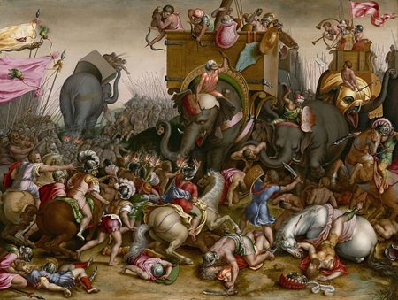

La Bataille de Zama

Le contexte
En 202 av. J.-C., la deuxième guerre punique touche à sa fin. Après des années de campagne en Italie sans pouvoir prendre Rome, Hannibal est rappelé en Afrique pour défendre Carthage. Le général romain Scipion l'Africain a débarqué en Afrique du Nord et menace directement la ville.
Les deux plus grands généraux de leur époque vont enfin s'affronter directement. Hannibal aligne une armée puissante, renforcée par 80 éléphants de guerre. Scipion, lui, a préparé une tactique précise pour les neutraliser. Tout se joue en un seul affrontement.
Source : Wikipedia — Bataille de Zama
La bataille
Hannibal lance ses éléphants en tête pour briser les lignes romaines. Mais Scipion a prévu le coup : il ordonne à ses soldats de s'écarter et de former des couloirs, laissant les éléphants passer sans causer de dégâts. Les légions romaines restent intactes.
La cavalerie romaine et numide alliée chasse ensuite la cavalerie carthaginoise hors du champ de bataille. Pendant ce temps, les deux infanteries s'affrontent durement. Au moment décisif, la cavalerie romaine revient dans le dos de l'armée d'Hannibal. Pris en tenaille, comme Hannibal l'avait lui-même fait à Cannes, les Carthaginois sont écrasés. Hannibal perd la bataille pour la première fois de sa vie.
Source : Wikipedia — Bataille de Zama
La fin de la deuxième guerre punique
La défaite de Zama est totale pour Carthage. On dénombre près de 20 000 morts carthaginois contre seulement quelques milliers côté romain. Hannibal réussit à fuir et conseille à Carthage d'accepter la paix sans attendre.
Le traité de paix qui suit est humiliant pour Carthage : elle perd toutes ses possessions hors d'Afrique, doit livrer sa flotte, payer une énorme indemnité de guerre, et ne peut plus faire la guerre sans l'accord de Rome. La deuxième guerre punique est terminée. Rome est désormais la puissance dominante du monde méditerranéen.
Source : Wikipedia — Bataille de Zama